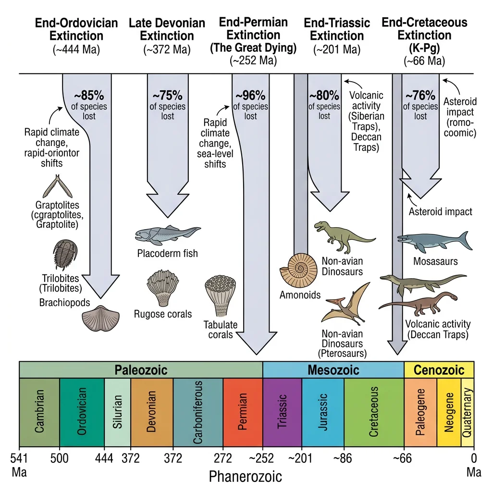
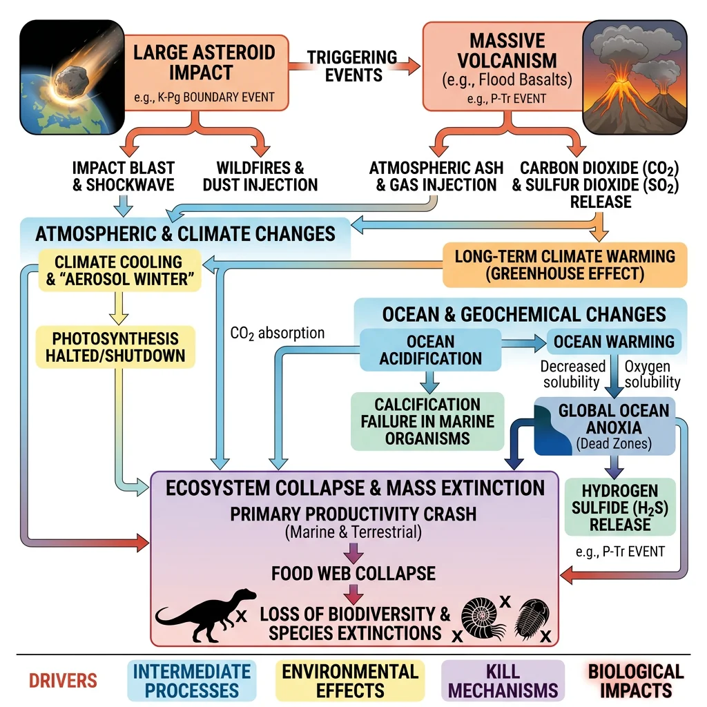
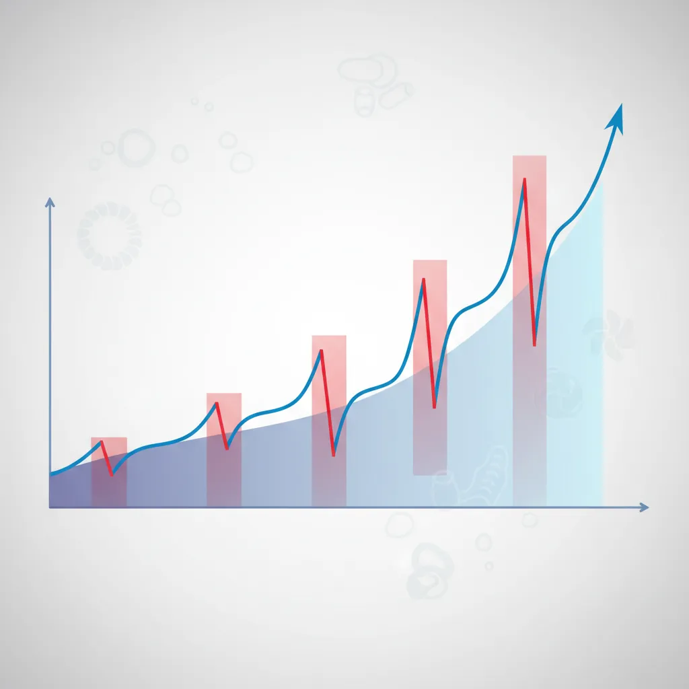
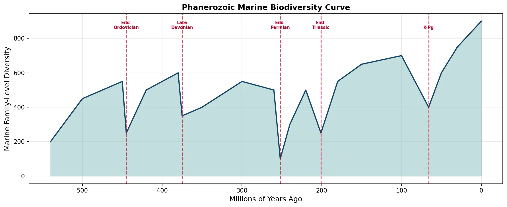
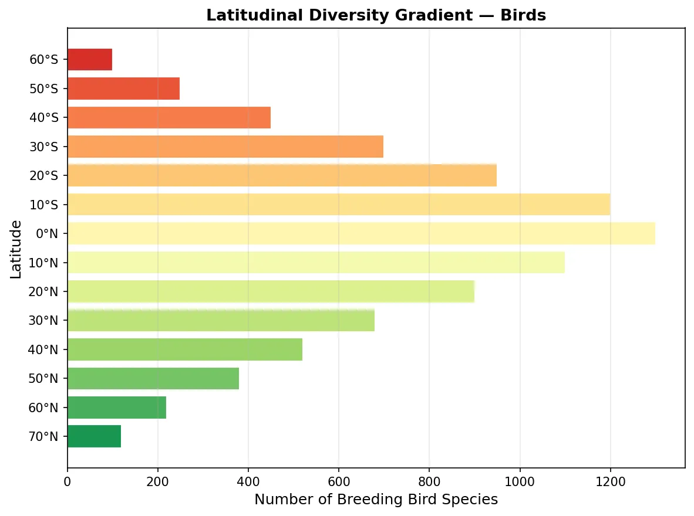
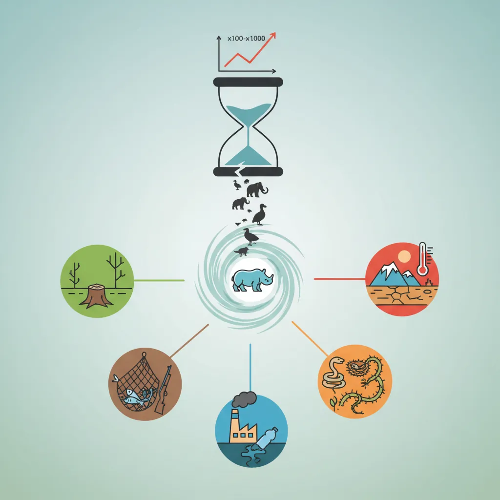
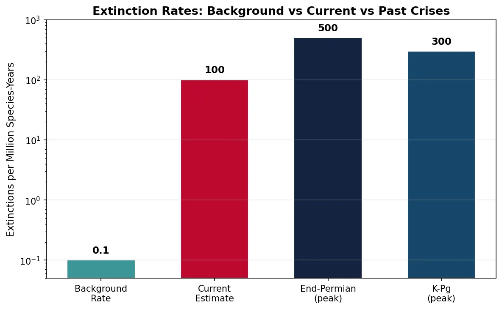
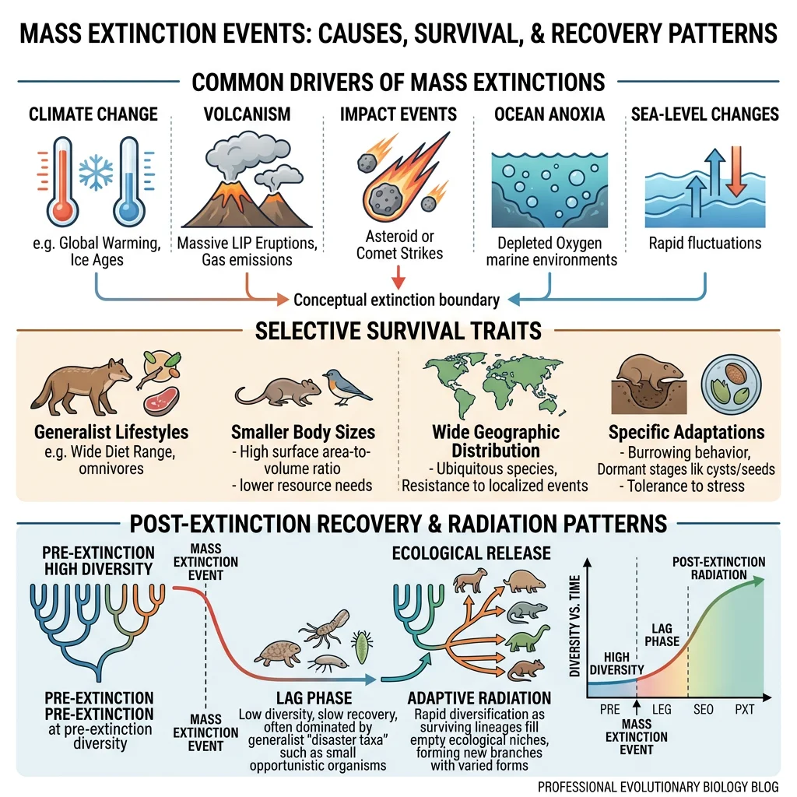

Evolutionary Biology Mastery
Darwin, Wallace & Natural Selection
Foundations, selection types, inclusive fitness, trade-offsGenetics of Evolution
DNA, population genetics, Hardy-Weinberg, molecular clocksSpeciation & Adaptive Radiation
Species concepts, reproductive isolation, rapid diversificationPhylogenetics & Taxonomy
Tree thinking, cladistics, molecular phylogenetics, classificationHuman Evolution & Migration
Hominin lineage, fossil evidence, Neanderthals, cultural evolutionCo-evolution & Symbiosis
Arms races, host-parasite, endosymbiosis, holobiontMass Extinctions & Biodiversity
Big Five extinctions, biodiversity patterns, conservationEvolutionary Developmental Biology
Hox genes, morphological innovation, heterochronyBehavioral & Social Evolution
Cooperation, game theory, sexual strategies, social insectsMathematical & Theoretical Evolution
Fitness landscapes, adaptive dynamics, ESS, selection modelsPaleontology & Fossil Interpretation
Radiometric dating, transitional fossils, taphonomyEvolutionary Genomics
Comparative genomics, gene duplication, HGT, epigeneticsMajor Extinction Events
Life on Earth has endured at least five catastrophic mass extinctions — episodes where more than 75% of species disappeared in a geologically brief interval. These are not gradual fade-outs; they are evolutionary crises that reset the trajectory of life, clearing ecological space for new lineages to radiate. Understanding these events is essential for grasping how biodiversity has been shaped — and what risks we face today.

| Event | When (Mya) | Species Lost | Primary Cause | Key Casualties |
|---|---|---|---|---|
| End-Ordovician | ~445 | ~85% | Glaciation + sea-level drop | Trilobites, brachiopods, graptolites |
| Late Devonian | ~375 | ~75% | Anoxia, volcanism, cooling | Reef-builders, armoured fish |
| End-Permian | ~252 | ~96% | Siberian Traps volcanism | Trilobites (final), most marine life |
| End-Triassic | ~201 | ~80% | CAMP volcanism + climate | Large amphibians, early archosaurs |
| End-Cretaceous (K-Pg) | ~66 | ~76% | Chicxulub asteroid + Deccan Traps | Non-avian dinosaurs, ammonites |
End-Ordovician Extinction (~445 Mya)
The End-Ordovician extinction occurred in two pulses, both linked to dramatic glaciation of the southern supercontinent Gondwana. The first pulse hit when ice sheets expanded and sea levels plummeted by over 100 metres, destroying vast shallow-water habitats where most marine life lived. The second pulse struck when glaciers rapidly melted, causing anoxic (oxygen-depleted) waters to flood back onto continental shelves.
Approximately 85% of marine species were lost, including trilobites, brachiopods, bryozoans, and graptolites. Survivors tended to be generalist species with wide geographic ranges — a recurring pattern in mass extinctions.
Late Devonian Extinction (~375 Mya)
The Late Devonian extinction was not a single event but a series of pulses spanning ~20 million years, with the Kellwasser and Hangenberg events being the most severe. The causes remain debated, but likely involved a combination of ocean anoxia, volcanic activity, and possibly the evolution of land plants. As trees colonised land, their roots weathered rocks and released nutrients into rivers and oceans, triggering massive algal blooms that consumed dissolved oxygen — suffocating marine life.
The reef ecosystems built by stromatoporoids and tabulate corals were devastated so thoroughly that reef-building did not fully recover for 100 million years. Armoured placoderm fish disappeared, making room for cartilaginous sharks and bony fish to diversify.
End-Permian — "The Great Dying" (~252 Mya)
The End-Permian extinction is the most catastrophic event in the history of life — 96% of marine species and 70% of terrestrial vertebrate species were annihilated. It took life approximately 10 million years to recover to pre-extinction diversity levels.
Siberian Traps and the End-Permian Catastrophe
The primary cause was the eruption of the Siberian Traps — a volcanic province covering ~7 million km² (the size of Europe). These flood basalts released staggering volumes of CO₂ and SO₂ over ~1 million years, triggering a cascade of kill mechanisms: global warming of 8–10°C, ocean acidification, ocean anoxia (widespread dead zones), and ozone destruction (allowing lethal UV radiation). The volcanic intrusions also cooked carbon-rich sediments, releasing methane and further amplifying warming. Recent geochemistry shows ocean temperatures may have exceeded 40°C at tropical latitudes — too hot for most complex life. Trilobites, which had survived for 300 million years, were finally extinguished.
End-Triassic Extinction (~201 Mya)
As the supercontinent Pangaea began to break apart, the Central Atlantic Magmatic Province (CAMP) erupted — the largest known volcanic event in Earth's history by area. CO₂-driven warming and ocean acidification wiped out ~80% of species, including many large amphibians, early crocodylomorphs, and most non-dinosaurian archosaurs.
Crucially, this extinction cleared the ecological stage for dinosaurs. Before the End-Triassic, dinosaurs were relatively minor players in terrestrial ecosystems. Afterwards, with competitors removed, they diversified explosively and dominated the Mesozoic for the next 135 million years.
Cretaceous–Paleogene (K-Pg) Extinction (~66 Mya)
The K-Pg extinction is the most famous and best-understood mass extinction, and the event that ended the age of dinosaurs. It was caused by the Chicxulub asteroid impact — a 10–15 km wide bolide that struck what is now the Yucatán Peninsula, Mexico.
The Iridium Anomaly and the Chicxulub Impact
In 1980, physicist Luis Alvarez, his geologist son Walter, and colleagues discovered a thin layer of iridium — an element rare on Earth but abundant in asteroids — at the K-Pg boundary in Gubbio, Italy. This "iridium anomaly" was found globally, pointing to an extraterrestrial impact. In 1991, the Chicxulub crater was identified beneath the Yucatán. The impact released energy equivalent to 10 billion Hiroshima bombs, generating a mega-tsunami, global firestorms, and an "impact winter" lasting years. Photosynthesis collapsed, food chains disintegrated, and 76% of species — including all non-avian dinosaurs, ammonites, and marine reptiles — went extinct. Small, insectivorous mammals that could shelter underground and subsist on detritus survived.
Causes of Extinction
Mass extinctions are rarely caused by a single factor. They typically involve cascading kill mechanisms — one primary trigger (impact, volcanism) that sets off a chain of secondary effects (climate change, ocean chemistry shifts, habitat loss). Understanding these mechanisms helps us assess modern extinction risks.

Climate Change
Climate change — both warming and cooling — has been the most pervasive driver of extinction throughout Earth's history. Rapid temperature shifts disrupt ecosystems faster than species can adapt or migrate.
- Greenhouse warming — volcanic CO₂ and methane release drove the End-Permian (+8–10°C) and End-Triassic (+3–4°C) extinctions by exceeding thermal tolerances
- Icehouse cooling — the End-Ordovician extinction was triggered by Gondwanan glaciation that locked up water and destroyed tropical shelf habitats
- Rate matters — species can adapt to gradual change (1°C per million years), but not rapid change (1°C per century). Modern warming is occurring 10–100× faster than any past volcanic episode
Asteroid Impacts
The Chicxulub impact at the K-Pg boundary is the clearest example of an extraterrestrial cause of mass extinction. The impact sequence was devastating:
- Seconds — shockwave vaporised rock, generating a fireball visible from thousands of kilometres
- Minutes to hours — ejecta re-entered the atmosphere globally, radiating enough heat to ignite wildfires worldwide
- Days to weeks — soot and dust blocked sunlight, triggering an "impact winter" with near-freezing global temperatures
- Months to years — photosynthesis collapsed; food chains disintegrated from the base up
- Decades — acid rain (from vaporised sulfate rocks) acidified soils and surface waters
Larger impacts (>10 km diameter) cause global extinctions; smaller impacts (<1 km) cause regional devastation. The Tunguska event (1908, ~50 m bolide) flattened 2,000 km² of Siberian forest but caused no species-level extinction.
Volcanism — Large Igneous Provinces
Large Igneous Provinces (LIPs) — massive volcanic eruptions producing >100,000 km³ of lava — are implicated in at least four of the Big Five extinctions. Unlike asteroid impacts (which are geologically instantaneous), LIP eruptions are sustained over hundreds of thousands to millions of years.
| Large Igneous Province | Age (Mya) | Associated Extinction | Area (km²) |
|---|---|---|---|
| Siberian Traps | ~252 | End-Permian | ~7,000,000 |
| CAMP | ~201 | End-Triassic | ~11,000,000 |
| Deccan Traps | ~66 | K-Pg (co-factor) | ~500,000 |
| Emeishan Traps | ~260 | Guadalupian | ~250,000 |
Ocean Chemistry Changes
Oceans absorb both CO₂ and heat, making them vulnerable to chemical disruption during extinction events:
- Ocean acidification — elevated CO₂ dissolves into seawater forming carbonic acid, reducing the availability of carbonate ions needed by shell-building organisms (corals, molluscs, foraminifera). This was devastating during the End-Permian and is happening again today
- Ocean anoxia — warmer water holds less dissolved oxygen; nutrient runoff fuels algal blooms that consume remaining oxygen. Anoxic "dead zones" expand, suffocating aerobic marine life. Black shale deposits at multiple extinction boundaries record widespread anoxia
- Hydrogen sulphide poisoning — in extreme anoxia, anaerobic bacteria produce toxic H₂S that can escape into the atmosphere, damaging the ozone layer and poisoning terrestrial ecosystems
Ocean Deoxygenation Today
The IPCC Special Report on the Ocean and Cryosphere (2019) documented that open-ocean oxygen content has declined by 2% since the 1960s, and the volume of oxygen minimum zones has expanded by 3–8%. Over 700 coastal "dead zones" now exist globally, up from 45 in the 1960s. While far less severe than Permian anoxia, the trajectory mirrors the early stages of past oceanic catastrophes. Marine heatwaves, coral bleaching, and fisheries collapse are accelerating.
Biodiversity Patterns
Biodiversity — the total variety of life at genetic, species, and ecosystem levels — is not static. It has waxed and waned over geological time, shaped by the balance between speciation (creating new species) and extinction (removing them). Understanding these patterns reveals the rules governing life's diversity.

Speciation vs Extinction Rates
Over the past 540 million years (the Phanerozoic Eon), marine animal diversity has shown a broadly increasing trend, punctuated by the Big Five mass extinctions. The key relationship is simple: net diversification = speciation rate − extinction rate. When speciation exceeds extinction, biodiversity increases; when extinction exceeds speciation, it crashes.
import numpy as np
import matplotlib.pyplot as plt
# Simplified Phanerozoic marine biodiversity curve
# Based on Sepkoski/Alroy data (family-level diversity)
time_mya = np.array([540, 500, 450, 445, 420, 380, 375, 350, 300, 260, 252,
240, 220, 201, 180, 150, 100, 66, 50, 30, 10, 0])
diversity = np.array([200, 450, 550, 250, 500, 600, 350, 400, 550, 500, 100,
300, 500, 250, 550, 650, 700, 400, 600, 750, 850, 900])
fig, ax = plt.subplots(figsize=(12, 5))
ax.fill_between(time_mya, diversity, alpha=0.3, color='#3B9797')
ax.plot(time_mya, diversity, color='#16476A', linewidth=2)
# Mark the Big Five
ext_times = [445, 375, 252, 201, 66]
ext_names = ['End-\nOrdovician', 'Late\nDevonian', 'End-\nPermian',
'End-\nTriassic', 'K-Pg']
for t, name in zip(ext_times, ext_names):
ax.axvline(x=t, color='#BF092F', linestyle='--', alpha=0.7)
ax.text(t, max(diversity)*0.95, name, ha='center', fontsize=7,
color='#BF092F', fontweight='bold')
ax.set_xlabel('Millions of Years Ago', fontsize=12)
ax.set_ylabel('Marine Family-Level Diversity', fontsize=12)
ax.set_title('Phanerozoic Marine Biodiversity Curve', fontsize=13,
fontweight='bold')
ax.invert_xaxis()
ax.grid(alpha=0.3)
plt.tight_layout()
plt.show()

Ecological Niches & Adaptive Zones
An ecological niche is the set of environmental conditions and resources a species uses — its "job" in the ecosystem. Mass extinctions are devastating because they destroy not just species but entire niches. However, recovery involves both niche refilling (new species occupy old roles) and niche creation (novel ecological strategies emerge).
| Ecological Role | Before K-Pg | After K-Pg |
|---|---|---|
| Large terrestrial herbivore | Sauropod dinosaurs | Proboscideans (elephants), ungulates |
| Apex predator (land) | Theropod dinosaurs | Large cats, canids, then humans |
| Aerial predator | Pterosaurs | Raptorial birds |
| Marine apex predator | Mosasaurs, plesiosaurs | Sharks (survived), whales (later) |
| Small insectivore | Small mammals (subordinate) | Diversified mammals (dominant) |
Latitudinal Diversity Gradient
One of ecology's most universal patterns is the latitudinal diversity gradient: species richness increases dramatically from the poles to the equator. Tropical rainforests cover only ~6% of Earth's land surface but harbour more than 50% of all terrestrial species. This pattern holds across almost all taxonomic groups — plants, insects, birds, mammals, fish, and fungi.
Several hypotheses explain this gradient:
- Energy hypothesis — higher solar energy in the tropics supports more productivity and thus more species
- Climate stability — tropics have been climatically stable for millions of years, allowing species to accumulate without periodic glacial purges
- Speciation rate — higher metabolic rates and shorter generation times in warm climates accelerate mutation and speciation
- Niche packing — stable tropical environments allow species to specialise on narrow niches, fitting more species into the same area
import numpy as np
import matplotlib.pyplot as plt
# Latitudinal diversity gradient: bird species richness
latitudes = np.array([70, 60, 50, 40, 30, 20, 10, 0, -10, -20, -30, -40, -50, -60])
bird_species = np.array([120, 220, 380, 520, 680, 900, 1100, 1300,
1200, 950, 700, 450, 250, 100])
fig, ax = plt.subplots(figsize=(8, 6))
colors = plt.cm.RdYlGn_r(np.linspace(0.1, 0.9, len(latitudes)))
ax.barh(range(len(latitudes)), bird_species, color=colors, edgecolor='white')
ax.set_yticks(range(len(latitudes)))
ax.set_yticklabels([f'{abs(l)}°{"N" if l >= 0 else "S"}' for l in latitudes])
ax.set_xlabel('Number of Breeding Bird Species', fontsize=12)
ax.set_ylabel('Latitude', fontsize=12)
ax.set_title('Latitudinal Diversity Gradient — Birds',
fontsize=13, fontweight='bold')
ax.grid(axis='x', alpha=0.3)
plt.tight_layout()
plt.show()

Conservation & Evolutionary Perspectives
The lessons of past mass extinctions are directly relevant to the modern biodiversity crisis. Conservation biology increasingly draws on evolutionary principles to preserve genetic diversity, predict species' adaptive potential, and mitigate the ongoing Sixth Extinction.

Genetic Diversity Preservation
Genetic diversity — the raw variation within and between populations — is the fuel for evolution. It determines whether species can adapt to changing environments. Small, isolated populations lose genetic diversity through genetic drift and inbreeding, reducing their evolutionary potential.
| Species | Population Bottleneck | Genetic Consequence | Conservation Status |
|---|---|---|---|
| Cheetah | ~10,000 years ago | Extremely low heterozygosity; skin grafts accepted between unrelated individuals | Vulnerable |
| Northern elephant seal | ~20 individuals in 1890s | No mitochondrial DNA variation detected | Recovered (~225,000) |
| Tasmanian devil | Devil facial tumour disease (1990s) | Low MHC diversity allows contagious cancer transmission | Endangered |
| Florida panther | ~20–30 individuals by 1990s | Inbreeding depression: heart defects, kinked tails; rescued by Texas cougar introduction | Endangered |
Evolutionary Rescue
Evolutionary rescue occurs when a declining population adapts rapidly enough to reverse its trajectory before going extinct. It is evolution on a conservation timescale — not millions of years, but tens of generations.
Evolutionary Rescue in Yeast Populations
Bell and Gonzalez (2009) demonstrated evolutionary rescue experimentally using Saccharomyces cerevisiae (baker's yeast). Populations were exposed to gradually increasing concentrations of salt — a lethal environmental stressor. Populations with high genetic diversity evolved salt tolerance and survived; populations with low genetic diversity went extinct. The key factor was standing genetic variation — the pre-existing diversity that natural selection could act upon. This experiment demonstrated that genetic diversity is literally life insurance for species facing environmental change.
Real-world examples of evolutionary rescue (or near-rescue):
- Peppered moths — adapted to industrial pollution then re-adapted when pollution decreased
- Pink salmon — shifted migration timing by 2 weeks over 17 generations in response to warming rivers
- Corals — some reef corals harbour heat-tolerant algal symbionts that may enable survival under warming, but the rate of warming may exceed adaptive capacity
Anthropocene Extinction Risks — The Sixth Extinction
Many scientists argue we are in the midst of a Sixth Mass Extinction, driven not by asteroids or volcanic eruptions but by human activity. Current species extinction rates are estimated at 100–1,000× the background rate (the normal rate experienced between mass extinctions).
Primary anthropogenic drivers (the "HIPPO" framework):
- Habitat loss — deforestation, urbanisation, agriculture; the single largest driver
- Invasive species — introduced predators, competitors, and diseases (e.g., rats on islands, chytrid fungus in amphibians)
- Pollution — pesticides, plastics, nitrogen runoff, light and noise pollution
- Population growth — increasing human consumption driving all other factors
- Overharvesting — hunting, fishing, wildlife trade (bushmeat, traditional medicine, pet trade)
import numpy as np
import matplotlib.pyplot as plt
# Background vs current extinction rates (mammals)
categories = ['Background\nRate', 'Current\nEstimate', 'End-Permian\n(peak)', 'K-Pg\n(peak)']
rates = [0.1, 100, 500, 300] # Extinctions per million species-years (E/MSY)
colors = ['#3B9797', '#BF092F', '#132440', '#16476A']
fig, ax = plt.subplots(figsize=(8, 5))
bars = ax.bar(categories, rates, color=colors, edgecolor='white', width=0.6)
ax.set_ylabel('Extinctions per Million Species-Years', fontsize=11)
ax.set_title('Extinction Rates: Background vs Current vs Past Crises',
fontsize=13, fontweight='bold')
ax.set_yscale('log')
ax.set_ylim(0.05, 1000)
ax.grid(axis='y', alpha=0.3)
# Add value labels
for bar, val in zip(bars, rates):
ax.text(bar.get_x() + bar.get_width()/2, bar.get_height()*1.3,
f'{val}', ha='center', fontweight='bold', fontsize=11)
plt.tight_layout()
plt.show()

Exercises & Review

Exercise 1: Compare Two Mass Extinctions
Compare the End-Permian and K-Pg extinctions by filling in: (a) primary cause, (b) percentage of species lost, (c) key casualties, (d) recovery time, and (e) which groups benefited from the ecological vacuum created.
Show Answer
End-Permian: (a) Siberian Traps volcanism → greenhouse warming + ocean anoxia; (b) ~96% species lost; (c) Trilobites (final extinction), most marine invertebrates, many terrestrial groups; (d) ~10 million years; (e) Archosaurs (leading to dinosaurs), therapsids (eventually leading to mammals).
K-Pg: (a) Chicxulub asteroid impact + possible Deccan Traps contribution; (b) ~76% species lost; (c) Non-avian dinosaurs, ammonites, mosasaurs, pterosaurs; (d) ~5 million years; (e) Mammals, birds, teleost fish — rapid diversification into vacated niches.
Exercise 2: HIPPO Analysis
Choose an endangered species (e.g., orangutan, vaquita, pangolin) and analyse which HIPPO factors threaten it. Rank the factors from most to least important for your chosen species and explain your reasoning.
Show Example Answer (Orangutan)
1. Habitat loss (most important) — palm oil plantations have destroyed 80% of Borneo/Sumatra rainforests. 2. Overharvesting — illegal pet trade takes young orangutans (mothers killed). 3. Population growth — increasing demand for palm oil drives deforestation. 4. Pollution — smoke from forest fires causes respiratory problems. 5. Invasive species (least impact) — not a primary threat for orangutans, though domestic dogs may harass ground-dwelling individuals.
Exercise 3: Biodiversity Curve Interpretation
Looking at the Phanerozoic biodiversity curve code above: (a) Why does diversity generally increase over time despite mass extinctions? (b) Why is post-extinction recovery not instantaneous? (c) What determines which species survive a mass extinction?
Show Answer
(a) Speciation rate generally exceeds extinction rate during "normal" periods. New niches are created by continental drift, tectonic activity, and biological innovations (e.g., the colonisation of land). Each recovery also explores new adaptive zones that didn't exist before. (b) Ecosystems need time to re-assemble — primary producers must recover first, then herbivores, then predators. Evolution of new body plans and ecological strategies takes millions of years. Environmental damage (e.g., atmospheric/oceanic chemistry) may persist for thousands of years. (c) Survivors tend to be geographically widespread, ecologically generalist, small-bodied, able to tolerate environmental extremes, and capable of using diverse food sources. Luck (being in the right place) also plays a significant role.
Downloadable Worksheet
Mass Extinctions & Biodiversity Worksheet
Document your study of mass extinction events, biodiversity patterns, and conservation challenges. Download as Word, Excel, or PDF.
Conclusion & Next Steps
Mass extinctions are both the great tragedies and the great opportunities of life's history. Each catastrophe destroyed the reigning order and opened ecological space for new experiments in body plans, behaviours, and ecological strategies. The survivors were often not the "best adapted" but the most flexible and fortunate. Today, understanding past extinctions is not merely academic — it informs our response to the biodiversity crisis unfolding around us. Genetic diversity, habitat connectivity, and reducing anthropogenic stressors are the keys to evolutionary rescue.